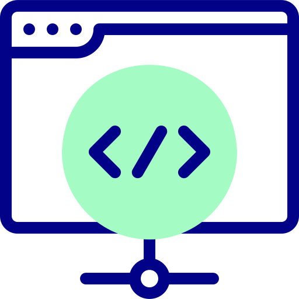

Areas da programação
Backend
Um dos usos do Python é automatizar tarefas, no entanto, a linguagem também permite coletar, organizar e salvar informações de páginas na internet; monitorar redes sociais.
Html
O HTML é uma linguagem de marcação usada para desenvolver páginas e documentos eletrônicos na internet, fornecendo informações para usuários, navegadores e mecanismos de busca.
C++
C++ é uma linguagem de programação usada para desenvolver aplicativos de software em geral, incluindo sistemas operacionais, compiladores, editores de texto, ferramentas de desenvolvimento, bancos de dados e muito mais.